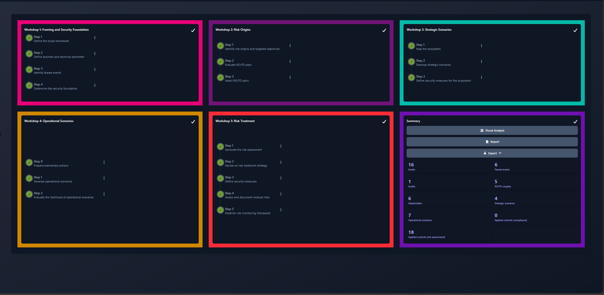
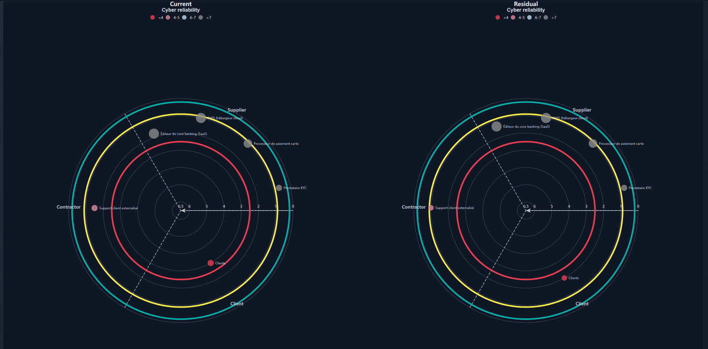
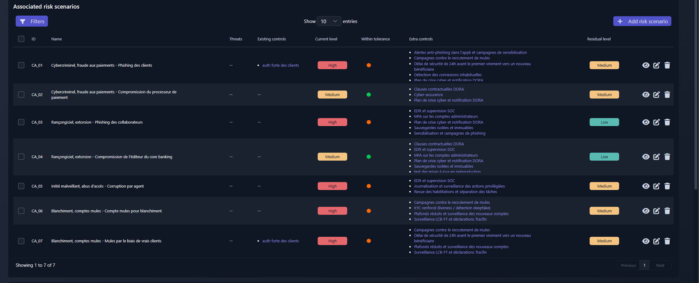
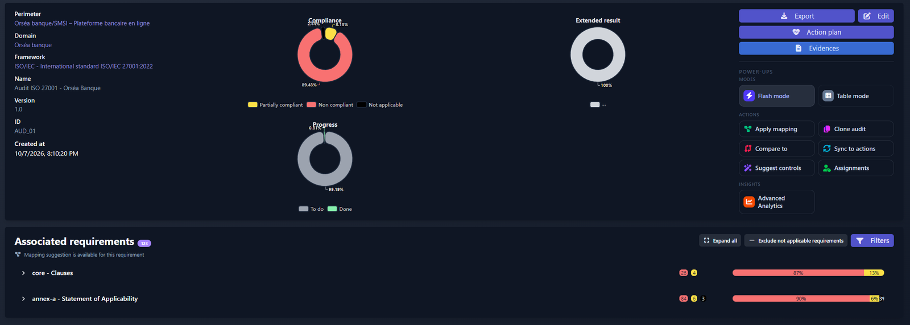
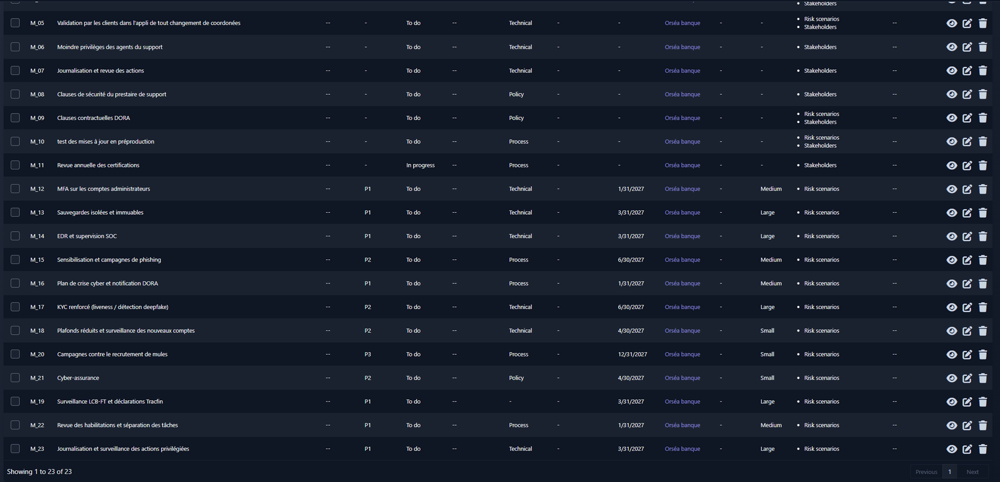

Orséa Banque : SMSI ISO 27001 et analyse de risques EBIOS RM
Projet GRC mené de A à Z sur une néobanque fictive, Orséa Banque : analyse de risques, traitement, déclaration d'applicabilité ISO 27001, politique de sécurité et présentation au comité exécutif.
Outil : CISO Assistant (édition communautaire, installé en local avec Docker). Référentiels : ISO/IEC 27001:2022, EBIOS Risk Manager (ANSSI), DORA, RGPD.
Le contexte
Orséa est une banque en ligne : une appli mobile, une carte, un core banking loué à un éditeur, un hébergement chez AWS et un support client en partie externalisé. Comme toute banque en France, elle doit respecter DORA, le RGPD et les règles anti-blanchiment, sous le contrôle de l'ACPR.
L'analyse de risques (EBIOS RM)
J'ai suivi les cinq ateliers de la méthode :
- 6 valeurs métier et leurs besoins de sécurité (disponibilité, intégrité, confidentialité, preuve)
- les attaquants plausibles et leurs objectifs : cybercriminels, groupes de rançongiciel, agent interne corrompu, réseaux de blanchiment
- 6 parties prenantes notées selon le niveau de menace qu'elles représentent
- 7 scénarios d'attaque détaillés étape par étape (28 actions au total)
- une stratégie de traitement pour chaque risque


Les résultats
Les 7 risques avaient tous la gravité maximale et cinq étaient à un niveau élevé. Après le plan de traitement, il n'en reste aucun.
| Risque | Scénario | Avant | Stratégie | Après |
|---|---|---|---|---|
| CA_01 | Fraude aux paiements par phishing des clients | Élevé | Réduire | Moyen |
| CA_02 | Piratage du processeur de paiement | Moyen | Transférer | Moyen |
| CA_03 | Rançongiciel via un collaborateur piégé | Élevé | Réduire | Faible |
| CA_04 | Rançongiciel via l'éditeur du core banking | Moyen | Réduire | Faible |
| CA_05 | Agent du support corrompu | Élevé | Réduire | Moyen |
| CA_06 | Comptes ouverts pour blanchir de l'argent | Élevé | Réduire | Moyen |
| CA_07 | Clients recrutés comme mules | Élevé | Réduire | Moyen |


Le passage à ISO 27001
J'ai évalué les 93 contrôles de l'Annexe A d'ISO 27001:2022 dans une déclaration d'applicabilité. Trois sont exclus (7.8, 7.11, 7.12) parce qu'Orséa n'a pas de salle serveur : la sécurité physique de l'hébergement relève d'AWS et est encadrée par le contrôle 5.23. Sur les 90 restants, 84 ne sont pas encore en place. C'est normal au démarrage : c'est le point de départ du plan.

Le plan et la direction
23 mesures, chacune avec un responsable, une priorité, une échéance et un coût estimé (environ 805 k€ la première année, chiffre fictif). Ensuite, une politique de sécurité (PSSI) en 15 sections et une présentation de 8 slides pour le comité exécutif, qui se termine sur les quatre décisions demandées.

Ce que je ferais différemment
- Au début, je voulais accepter deux risques élevés liés au blanchiment. Un risque élevé de gravité maximale, on commence par le réduire.
- J'avais mis des mesures pas encore réalisées dans les mesures existantes. Le risque actuel paraissait alors plus faible qu'il ne l'était.
- Pour l'agent corrompu, j'avais pensé au contrôle d'identité à l'ouverture de compte. Contre une menace interne, ce qui marche, c'est la gestion des accès : moindre privilège, revue des droits, validation à deux personnes.
Livrables
| Document | Fichier |
|---|---|
| Présentation au comité exécutif | Synthese_COMEX_Orsea_Banque.pdf |
| Politique de sécurité (PSSI) | PSSI_Orsea_Banque.pdf |
| Déclaration d'applicabilité ISO 27001 | SoA_ISO27001_Orsea_Banque.xlsx |
| Plan de traitement | Plan_de_traitement_Orsea_Banque.xlsx |
| Atelier 1 : besoins de sécurité (DICP) | DICP_Orsea_Banque.xlsx |
| Atelier 1 : événements redoutés | EBIOS_Atelier1_Evenements_redoutes.xlsx |
| Atelier 2 : sources de risque | EBIOS_Atelier2_SR_OV.xlsx |
| Atelier 3 : écosystème | EBIOS_Atelier3_Ecosysteme.xlsx |
Orséa Banque est une entreprise fictive : les prestataires, les chiffres et les budgets sont inventés pour l'exercice.